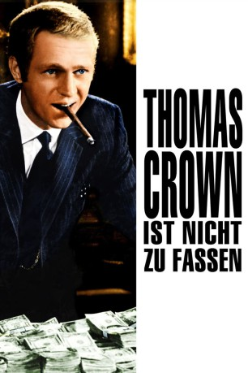

#9969 Thomas Crown ist nicht zu fassen
Alternativ: The Thomas Crown Affair
Auszeichnungen: 1 Oscars gewonnen für 1 Oscars nominiert 1 GoldenGlobes gewonnen
 
 IMDB-Wertung: 7.0 / 10
IMDB-Wertung: 7.0 / 10  Metascore: 66
Metascore: 66 
Nach einem besonders dreisten Bankraub gerät der erfolgreiche Geschäftsmann Thomas Crown ins Visier der ermittelnden Versicherungsagentin Vicky Anderson. Davon überzeugt, dass er der Kopf hinter dem Überfall ist, beginnt sie ihn zu überwachen und sich ihm auch privat zu nähern. Obwohl Crown ziemlich schnell hinter Vickys Absicht kommt, ihm in einem unbedarften Moment ein Schuldeingeständnis zu entlocken, ist er nur allzugern bereit, sich auf ein Katz-und-Maus-Spiel mit der attraktiven jungen Dame einzulassen.
Jahr: 1968
Dauer: 102 Minuten
FSK: 12
Land: USA Studio: United ArtistsTonspuren:
Untertitel:
Auflösung: 1080p (1920x1040) Größe: 6707 MB
Genre: Thriller, Drama, Krimi, Liebe
Regisseur:  Norman Jewison
Norman Jewison
Drehbuch: Alan Trustman
Soundtrack: Michel Legrand
Darsteller:
 Steve McQueen als Thomas Crown
Steve McQueen als Thomas Crown Faye Dunaway als Vicki Anderson
Faye Dunaway als Vicki Anderson- Paul Burke als Eddy Malone
 Jack Weston als Erwin
Jack Weston als Erwin- Biff McGuire als Sandy
- Addison Powell als Abe
- Astrid Heeren als Gwen
 Gordon Pinsent als Jamie
Gordon Pinsent als Jamie Yaphet Kotto als Carl
Yaphet Kotto als Carl Richard Bull als Booth Guard
Richard Bull als Booth Guard- Peg Shirley als Honey
- Sam Melville als Dave
 Ted Gehring als Marvin
Ted Gehring als Marvin- Paul Verdier als Elevator Operator
- Judy Pace als Pretty Girl
- Allen Emerson als Don (uncredited)
 Bruce Glover als Bank Manager (uncredited)
Bruce Glover als Bank Manager (uncredited)- John Orchard als John - Crown's Butler (uncredited)
- Patty Regan als Girl in Elevator (uncredited)
 Johnny Silver als Bert (uncredited)
Johnny Silver als Bert (uncredited)- Sidney Armus als Arnie
- Patrick Horgan als Danny
- Carol Corbett als Miss Sullivan
- Tom Rosqui als Pvt. Detective
- Michael Shillo als Swiss Banker
- Nora Marlowe als Marcie
- Leonard Caron als Jimmy Weaver (uncredited)
- Harry Cooper als Ernie (uncredited)
- Victor Creatore als Cash Room Guard (uncredited)
- Nikita Knatz als Sketch Artist (uncredited)
- Charles Lampkin als Elevator Operator (uncredited)
- Todd Martin als Benjy (uncredited)
- Ed T. McDonnell als Boston Police Officer at Roadblock (uncredited)
- James Rawley als Elevator Operator (uncredited)
- Paul Rhone als Cash Room Guard (uncredited)
- Jon Shank als Curley (uncredited)
Datei: X:\1968\Thomas Crown ist nicht zu fassen (1968, FSK12, 1920x1040).mkv seit 15.11.2018
Festplatte: HD 1900-1970
 Es gibt insgesamt 25 Filme in der Gruppe '1968'
Es gibt insgesamt 25 Filme in der Gruppe '1968'